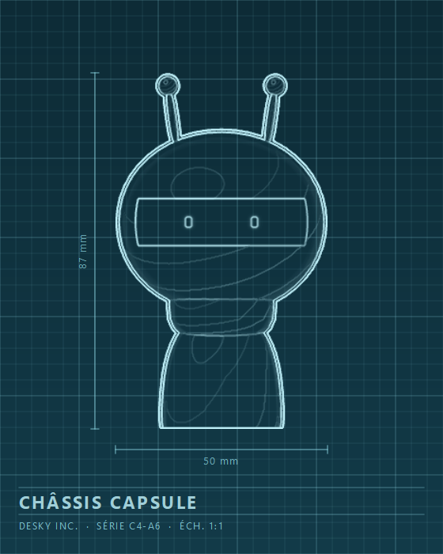

Capsule chassis
The original chassis, assembled without interruption since the very first series. An articulated head on a separate body: it nods, it tilts, it turns around to follow your cursor. Antennas, discs or fins: every ear in the catalogue comes off this line. At Desky Inc. they call it “the one with a neck”.
- In service since
- 2017
- Height
- 87 mm
- Width
- 50 mm
- Dry weight
- 340 g
- Joints
- 3 (neck, head, torso)
- Computer
- DK-4 “Colibri”